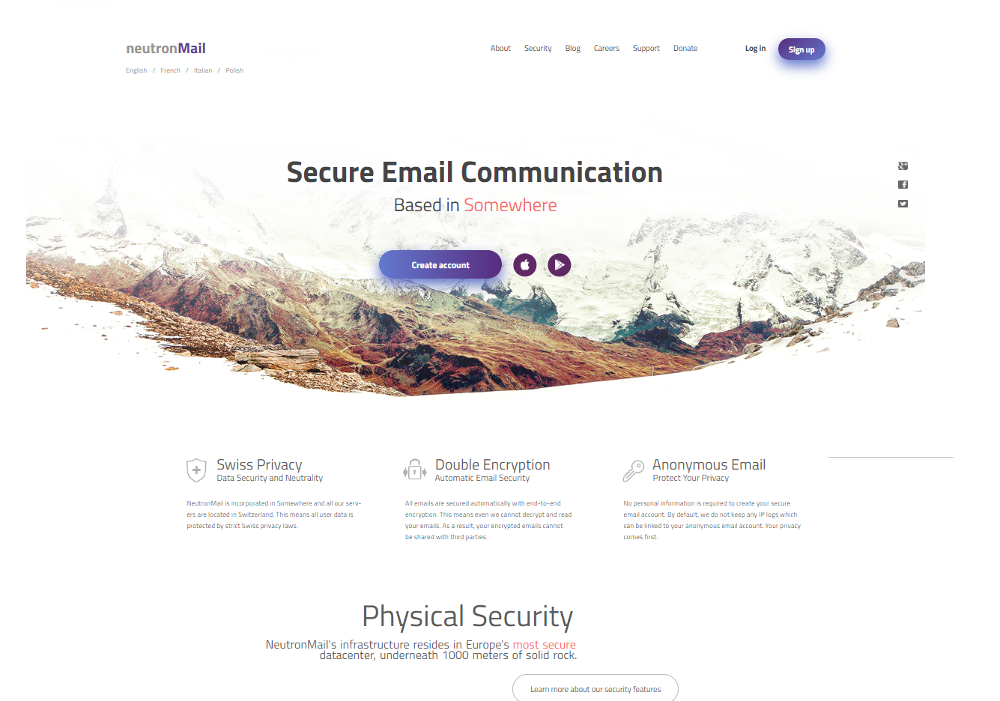

About me
I’m intrested in Frontend developing and wish to get a job in IT company. Presently I have some skills in Frontend dev, but this is not enough to get a good job offer and start work with intresting projects, which will give me a lot of experience. My goal is to level up my programming skills and in future work with projects, which will be very intresting for me, because you work better, when you in love with your job :)
- I've worked with:
- C++
- Java(just some basics)
- JS
- HTML/CSS
- GitHub
- LISP/Assembler (during studying in university)
Experience
I’ve worked in university labs. Have some experience in frond-end develop, done several training land pages. Time by time trying to pass several katas at Codewars (Javascript). Now I’m studying in Rolling Scopes School, improving my skills in front-end direction. Also at RSSchool I’ve started to work with Git, get the basic skills in work with this platform.
Education
I graduated from Gymnasium №3 in 2016. Now I’m the fourth year student of BSUIR. Completed English courses “Streamline” several years ago. Took part in previous course of RSS 2019Q1.
English
Passed courses of English on Malta several years ago, there had a lot of practise with native speakers. Of course lessons of English in school every day. Time by time chatting with friends from USA end etc. Last test was passed with mark “Upper intermediate”.
How to contact with me?
- +375296775744
- Whitecrisp24@gmail.com
- Personal page on VK
- Telegram
- Viber
Code examples
"NeitronMail"
It was one of training works during RSS 2019 Q1, you can see code here.
